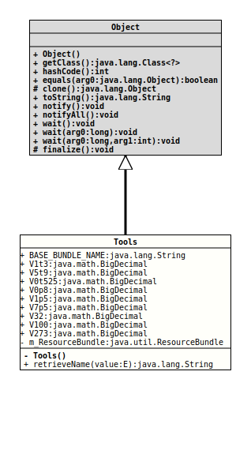

java.lang.Object
org.tquadrat.foundation.value.internal.Tools
@UtilityClass
@ClassVersion(sourceVersion="$Id: Tools.java 1072 2023-09-30 20:44:38Z tquadrat $")
@API(status=STABLE,
since="0.1.0")
public final class Tools
extends Object
Internal utilities for the value module.
- Author:
- Thomas Thrien (thomas.thrien@tquadrat.org)
- Version:
- $Id: Tools.java 1072 2023-09-30 20:44:38Z tquadrat $
- Since:
- 0.1.0
- UML Diagram
-

UML Diagram for "org.tquadrat.foundation.value.internal.Tools"
{kind=link}
-
Field Summary
FieldsModifier and TypeFieldDescriptionstatic final StringThe base class for the resource bundle.private static final ResourceBundleThe resource bundle for this module.static final BigDecimal0.8static final BigDecimal0.525static final BigDecimal100static final BigDecimal1.5static final BigDecimal1/3static final BigDecimal273.15static final BigDecimal32static final BigDecimal5/9static final BigDecimal7.5 -
Constructor Summary
Constructors -
Method Summary
Modifier and TypeMethodDescriptionretrieveName(E value) Returns the translation for the given enum name.
-
Field Details
-
BASE_BUNDLE_NAME
The base class for the resource bundle.- See Also:
-
V1t3
1/3 -
V5t9
5/9 -
V0t525
0.525 -
V0p8
0.8 -
V1p5
1.5 -
V7p5
7.5 -
V32
32 -
V100
100 -
V273
273.15 -
m_ResourceBundle
The resource bundle for this module.
-
-
Constructor Details
-
Tools
private Tools()No instance allowed for this class.
-
-
Method Details
-
retrieveName
Returns the translation for the given enum name.- Type Parameters:
E- The type of the enum.- Parameters:
value- The enum value.- Returns:
- The translation.
-